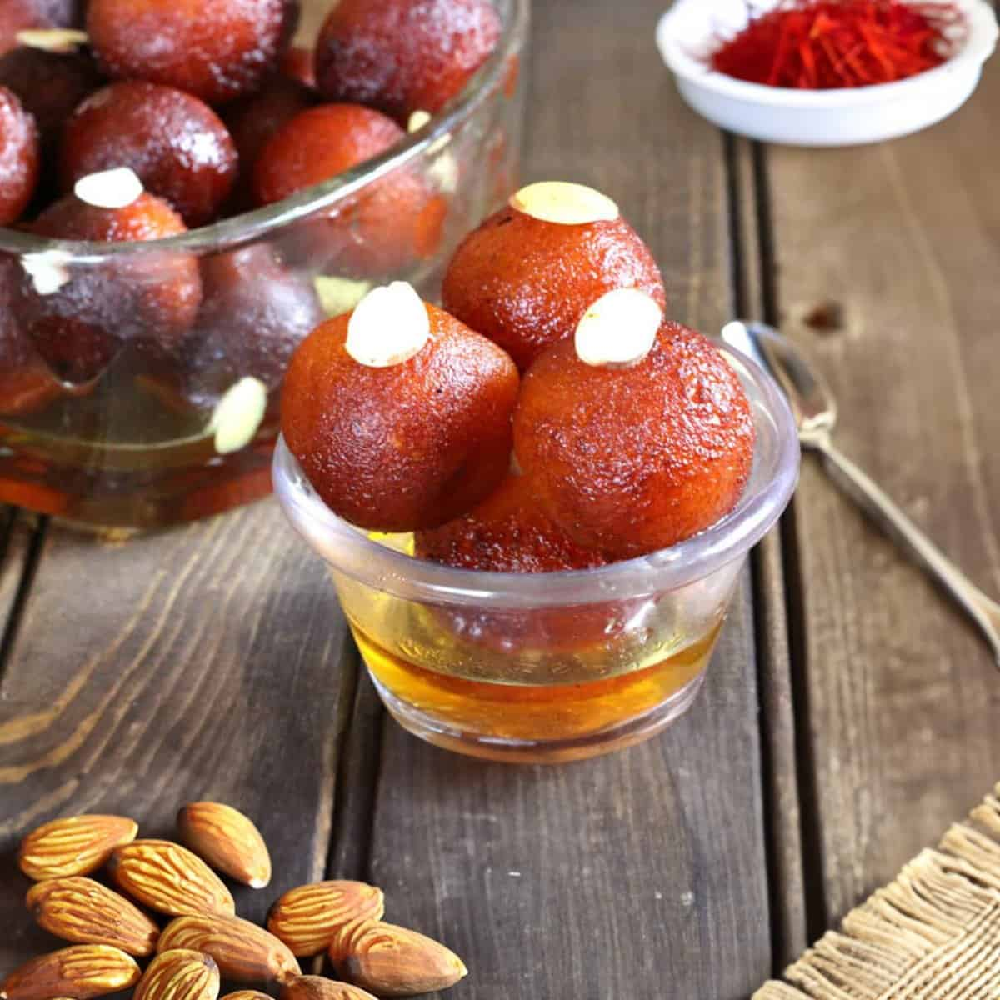

Gulab jamun
Ingredients:
- For Sugar Syrup:
- 2 cups sugar
- 5 cups water
- 1 tsp milk
- 1/4 tsp cardamom seeds
- 1/2 tsp saffron
- 1/2 tsp cardamom powder
- For Gulab Jamun Balls:
- 1 1/2 cups khoya, grated
- 1/2 tsp baking soda
- 1/2 cup maida
- 1 tsp milk
How to Make Homemade Gulab Jamun:
- Take required quantity of sugar and water in a deep pan. Stir and bring to boil on high flame for sugar to dissolve.
- Now add milk and cardamom seeds to the sugar water. Boil further and strain.
- Then add saffron and cardamom powder and bring the mixture to rolling boil for about 5-6 minutes until it becomes little sticky.
- Take the grated Khoya in a medium size deep bowl.
- Take the grated Khoya in a medium size deep bowl.
- Add a teaspoon of milk to it and knead all of them together to make a smooth and soft dough. Add another teaspoon of milk if required.
- Make sure that the dough is a bit softer to avoid cracking of ball while deep frying.
- Divide the dough into equal parts and make smooth surfaced balls out of it.
- Now heat ghee in a pan over medium flame and add the Jamun balls to deep-fry them. Cook evenly until it becomes golden brown.
- Make sure that you do not cook on high flame otherwise the balls will burn.
- Now drain and let them cool for few minutes.
- Then immerse the gulab jamuns in the warm sugar syrup for at least 30 minutes. It increases in size when it soaks the sugar syrup.
- Hot and tasty sweet dish is ready to serve.

Rava-Barfi
Ingredients:
- Rava / Sooji - ½ cup
- Ghee - 1 tsp + 2 tblsp
- Coconut - 3 tblsp
- Sugar - 1 cup
- Water - ½ cup
How to Make Homemade Rava Barfi:
- Heat 1 tsp ghee in a pan. Add in sooji and roast for 2 to 3 mins.
- Add coconut and roast again for 1 min. Remove it to a bowl.
- Take sugar and water in a pan, cook till it reaches 1 string consistency.
- Add in sooji mix and cook till it thickens.
- Add in ghee and mx well.
- Once it starts to get frothy, pour this into a greased mould and leave to cool.
- Once it starts to get frothy, pour this into a greased mould and leave to cool.